En esta seccion se abrira parentesis para hablar sobre los datos proporcionados por el Sudario de Oviedo
Continuando con la parte forense, al Hombre de la Sindone le colocan un lienzo con mirra y aloe en la
cabeza
para detener el flujo de sangre mezclada con liquido de provocado por un edema pulmonar
En el primer plano la cabeza estaba inclinada hacia la derecha y recargada sobre el hombro derecho. Al
intentar
envolverle la cabeza notan que el brazo les impide rodear por completo el lienzo,
por lo que hacen un doblez en la tela, generando dos manchas simetricas en el sudario. Cosen con
alfileres la
tela con la barba y el pelo para mantenerlo fijo durante el proceso, y unen la tela con la parte de la
nuca a
traves del pelo, formando las manchas
en forma de alas de mariposa y tocando posiblemente el punto de salida de la lanza.
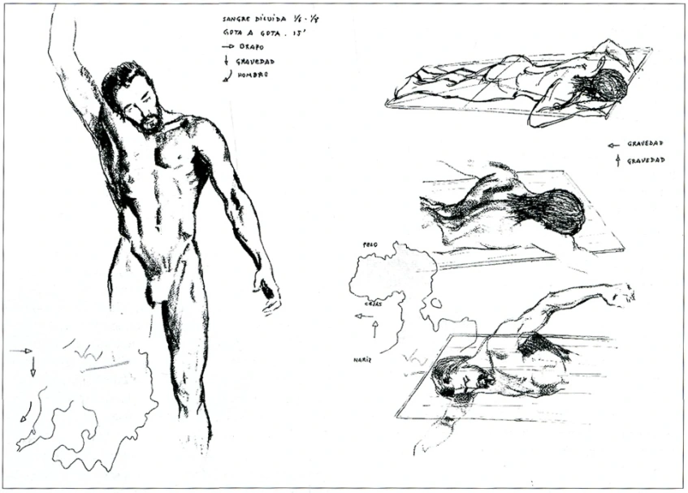
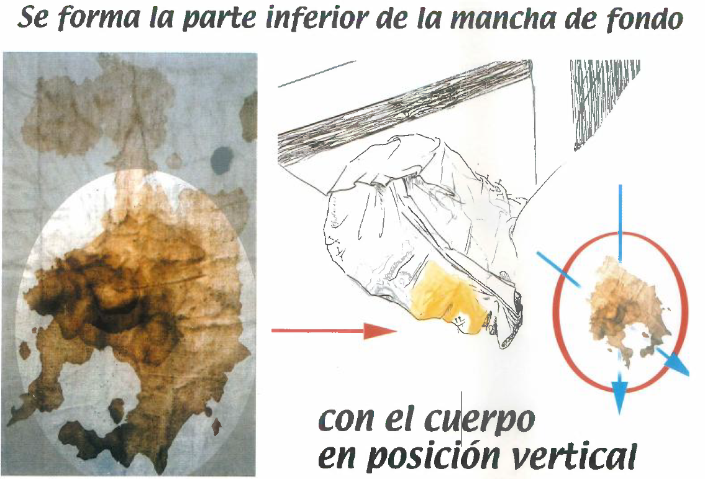
Las heridas provocadas por la corona de espinas impregnan el lienzo debido a que se volvian a abrir
durante el
proceso de la agonia
Despues de desclavar los pies del stipes, retiran el cuerpo aun clavado de los brazos al patibulum, pero
con la
cabeza inclinada boca abajo, provocando que la sangre fluya hacia la frente por efecto de la gravedad
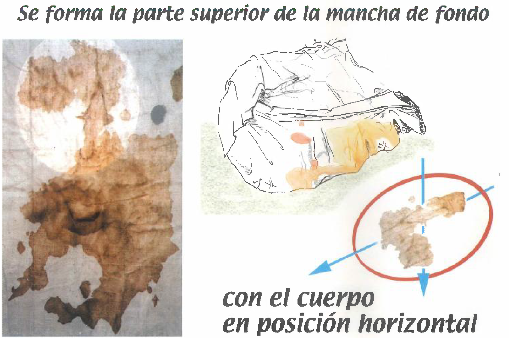
Finalmente el cuerpo es desclavado, aun bocabajo, logran bajar los brazos, pero las piernas siguen
flexionadas
por el rigor mortis. Logran envolver la cabeza por completo, dejandole un nudo para el traslado,
marcando la
oreja derecha.
Durante el traslado al sepulcro se mantine los orificios nasales tapados con una mano para frenar el
flujo de
sangre, esto debido a que la distancia que habia del lugar de ejecucion (el Golgota) hasta el sepulcro
era muy
corta, aproximadamente 45 m.
Al llegar al sepulcro se retira el sudario de la cabeza, "enrrollado en un lugar aparte", para proceder
a
preparar el cuerpo. Se planteo que posiblemente hubieran colocado algunas plantas o flores alrededor del
cadaver
del Hombre de la Sindone, plantas tipicas de
Jerusalen. A la sabana mortuoria o Sindone le aplican aloe, mirra y aceite de helicriso, como
conservador para
el cadaver.
El codigo de la ley judia (Halaja) indicaba que los cadaveres tenian que estar lavados, con el cabello
cortado,
sin vello facial y con las uñas cortadas. Sin embargo, si el fallecido fue ajusticiado por el gobierno o
el
estado, o ha tenido una muerte violenta
con derramamiento de sangre, el cadaver no pasaba por el proceso previamente mencionado, solamente se
aromatizaba y se envolvia con una sola sabana
En algun punto del traslado se tuvo que poner el cadaver en una posicion horizontal, provocando que la
herida
del costado emanara sangre hasta la cintura, creando un "cinturon" de sangre
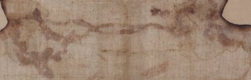
A la cabeza le ponen una mentonera para mantener la boca cerrada, y probablemente le han dejado unas
monedas en
los ojos
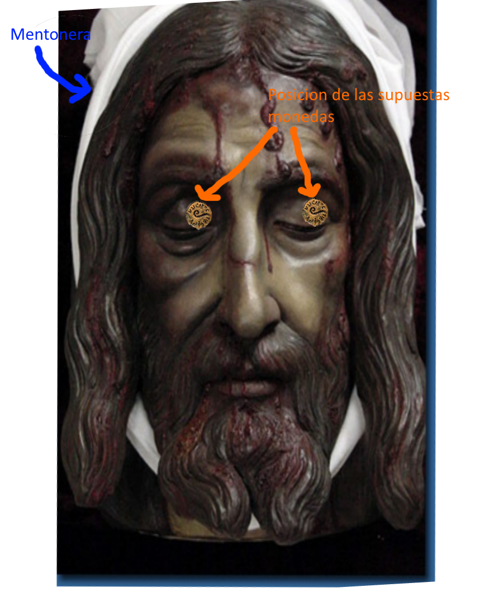
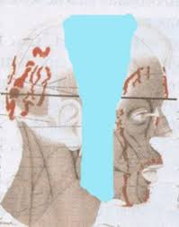
Finalmente envuelven el cadaver en la Sindone, mantenendo fijo el cuerpo con un pedazo de tela extraido
de la
Sindone para servir como venda
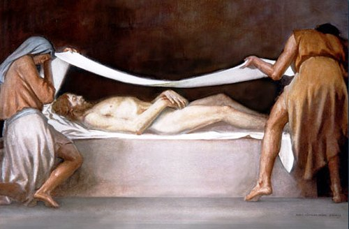
Se ha planteado que posiblemente hayan dejado una especie de certificado de defuncion, indicando la
identidad
del difunto como "ESOU NAZARENOS" en griego, al igual que otras palabras griegas y en latin. Aun esta en
debate
si es autentico este hallazgo o no


 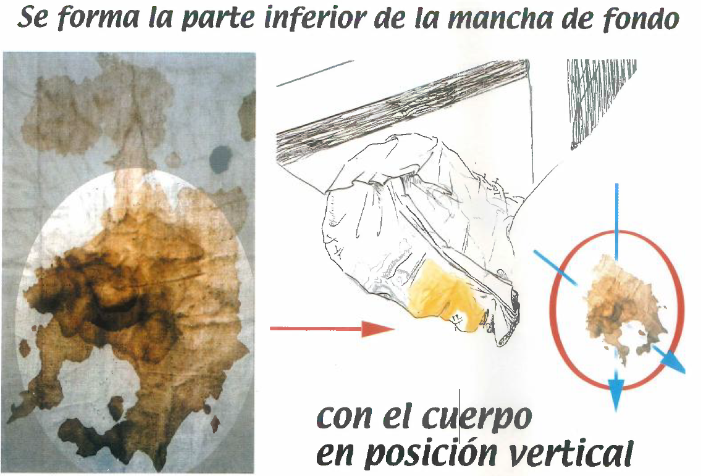
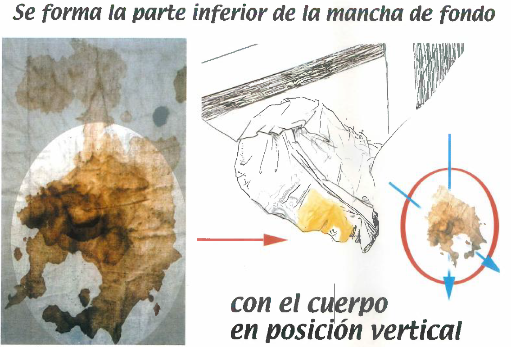
 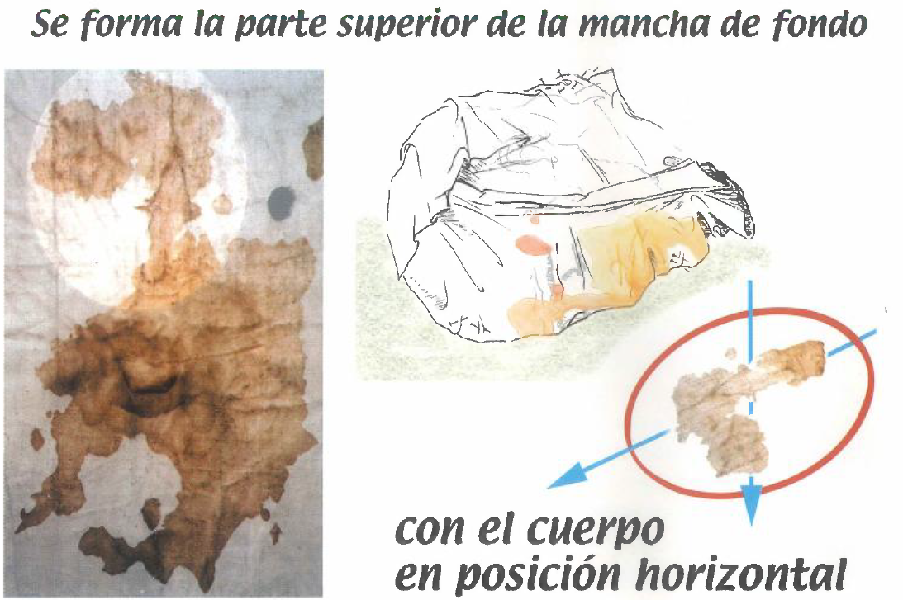
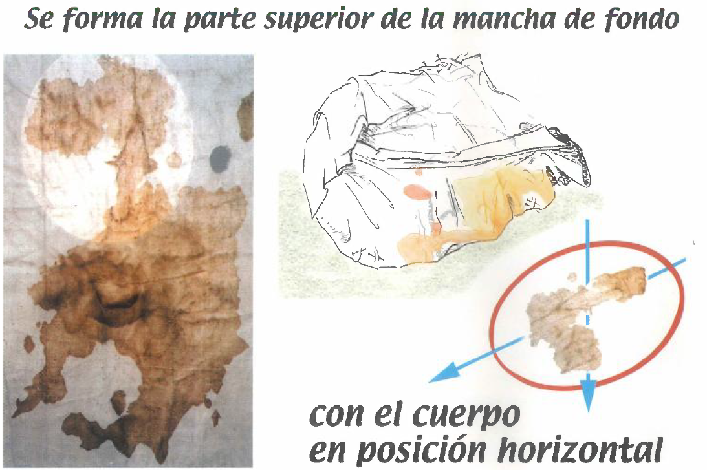